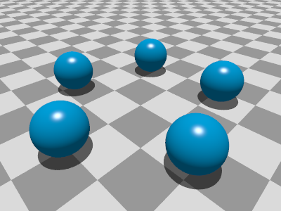
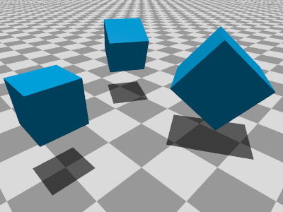
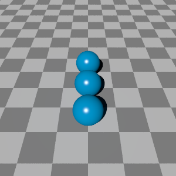
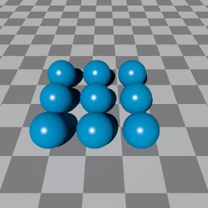
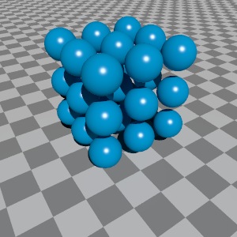
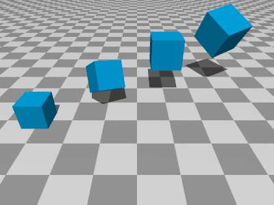

In the following examples, S is a sphere primitive with
radius 0.5, and C is a cube of length 0.4.
RotSpace(N, R, Ob):
Constructs a union containing N
copies of object Ob at evenly spaced angles in a circle
of radius R.

RotSpace(5,2,S)
RotSpace_SR(N, R, Ob, Sc, Rt):
Same as RotSpace(N, R, Ob, with the Kth copy of Ob scaled by
1+Sc*K and rotated by Rt*K for each K in 0,...,N.

RotSpace_SR(3, 2, C, 0.25, 25*z)
Row(Ob, Start, N, Space):
Constructs a union containing N copies of object Ob
in a row, starting at point Start and spaced apart by vector
Space.
Row(S, <-3, 0, 2>, 4, <2, 0, 0>)Row(S, <-3, 0, 2>, 4, <2, 0.5, 1>)
Rows may be iterated to produce more complex objects. For example:

#declare R = Row(X, <-1, 0, 0.5>, 3, 1.25*z)

#declare R2 = Row(R, <-3, 0, 2>, 3, <1.25,0,0>)

#declare R3 = Row(R2, <0, 0.5, 0>, 3, <0, 1.25, 0>)
Row_SR(Ob, Start, N, Space, R, S):
Same as Row(Ob, Start, N,
Space) but with the Kth copy of Ob scaled by
1+S*K and rotated by R*K for each 0,...,K.

Row_SR(C, <-3, 0, 2>, 4, <2, 0.5, 1>, <45,45,45>, 0.15)